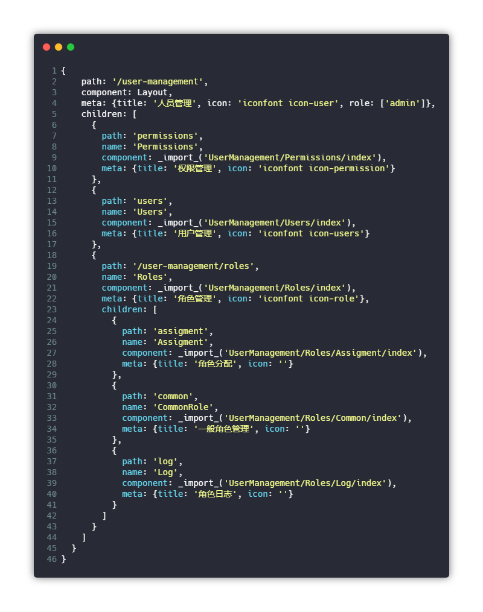
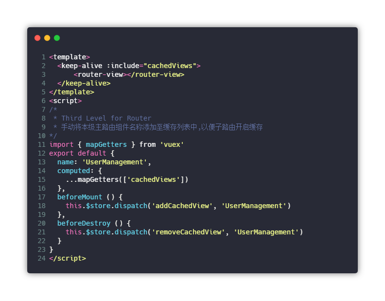

三级及以上路由菜单的定义配置
鉴于框架支持页面缓存以及层级嵌套的问题，在三级及以上路由菜单定义上会和浅层及定义稍微有一些区别。这里做一些详述。
这里我们仍然以一个人员管理的模块做例子。
假设我们在该模块下有[用户管理]，[权限管理]，[角色管理]三个模块，角色管理下我们又分有[一般角色管理]，[分配管理]，[日志管理]三个模块。那么这三个模块就处于三级目录状态。
假设其基本的目录结构是这样：

我们的路由表配置应该类似这样：
[warning] 注意路径
注意角色那一级的路径，我们需要把顶级菜单的路径拼到二级菜单的path上,配置该文件的目的是为了保证三级及以上路由的模块组件也能正常被缓存

接下来我们需要注意最重要的一点，我们需要在UserManagement目录下，也就是根目录下的index.vue配置如下内容：

代码如下：
<template>
<keep-alive :include="cachedViews">
<router-view></router-view>
</keep-alive>
</template>
<script>
/*
* Third Level for Router
* 手动将本级主路由组件名称添加至缓存列表中,以便子路由开启缓存
*/
import { mapGetters } from 'vuex'
export default {
name: 'UserManagement',
computed: {
...mapGetters(['cachedViews'])
},
beforeMount () {
this.$store.dispatch('addCachedView', 'UserManagement')
},
beforeDestroy () {
this.$store.dispatch('removeCachedView', 'UserManagement')
}
}
</script>
OK，这样我们的三级菜单就定义好了。相比一般的菜单定义主要是增加了一个特殊的index.vue页面用来保证页面缓存和路由的正确性。并且我们需要在路由配置时注意路径问题。